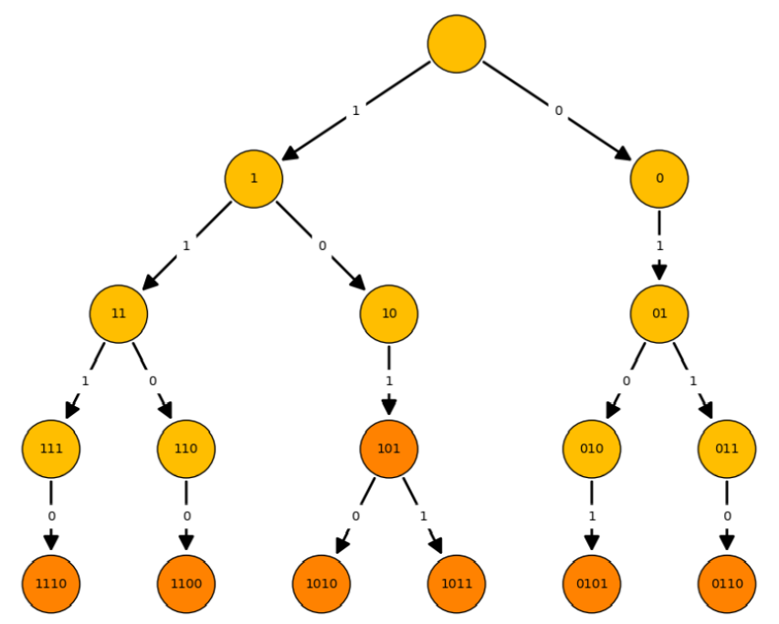

Az informatikában a kódoláselmélet adatok különböző reprezentációjával és azok
közötti átalakításokkal foglalkozik. A kezelt adatok mennyisége rohamosan növekszik. A hatékony
tároláshoz és átvitelhez az adatok tömörítés szükséges.
A kódolás során fontos kérdés, hogy az adat teljes egészében visszaállítható-e.
Tömörítés esetében ennek megfelelően használhatunk veszteségmentes vagy veszteséges
eljárásokat (pl. JPEG, MPEG, MP3). Mi csak az előbbivel foglalkozunk.
A kódoláselméletnél meg kell adnunk az információ alapegységét, azaz azt, mennyi
információtartalma van az atomi tárolási egységnek. Mivel a jelenlegi számítógépek bináris elven
működnek, ez $r = 2$ és így a kódszavaink a $\Gamma = \{'0', '1'\}$ ábécé feletti szavak lesznek.
Kódnak nevezzük a $\Gamma$ feletti véges szavak (kódszavak) egy tetszőleges nem üres halmazát.
Egy kód szemléletesebb ábrázolásához elkészíthetjük annak kódfáját. Ebben
a
fában a fa csúcsai szavak (nem feltétlenül kódszavak), az éleit pedig a kódszavak lehetséges
karaktereivel címkézzük. A fa gyökerében az üres szó szerepel és egy szóhoz tartozó csúcs
leszármazottai azok a szavak, amelyeket úgy kapunk, hogy a szó után írjuk az élen szereplő
karaktert. A kódhoz tartozó kódfa az a legkevesebb csúcsot tartalmazó ilyen tulajdonságú fa, ami
tartalmazza az összes kódszót.

A kódfa segítségével egy bitsorozat hatékonyan dekódolható. A gyökérből indulva a
bitek szekvenciájának megfelelően járjuk be a fát, az élek mentén kódszót keresve és a bejárást
ismételgetve megkapjuk a dekódolt adatot. (Ha a dekódolás lehetséges és egyértelmű.)
A kódolást betűnkénti kódolásnak nevezzük, ha az eredeti $\sum$ abc
feletti
adatot betűnként egy $\sum \longrightarrow T \subset \Gamma^*$ kölcsönösen egyértelmű (bijektív) leképezéssel
készítjük el. Egy kódot egyenletes kódnak nevezünk, ha a kód szavainak hossza egyenlő.